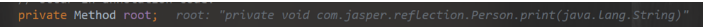
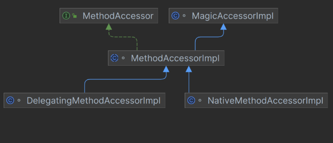

反射
一般我们在使用某个类之前就确定了是什么类，直接可以new来进行实例化来进行操作
反射就是一开始不知道要初始化的类，不能使用new来实例化
它允许在运行时检查和操作类、接口、字段和方法
框架的灵魂
通过反射你可以获取任意一个类的所有属性和方法，还可以调用这些方法
在spring springboot mybatis中都使用了
- jdk中的动态代理 [代理模式](）
- 注解 annotation
优点
- 代码更加灵活，为框架提供了便利通过配置文件来加载不同的对象，调用不同的方法
- 在运行时有了分析操作类的能力
缺点
- 破坏了封装，允许访问private method and param
- 增加了安全问题，无视泛型参数的检查
- 泛型擦除
- 性能相对差一点
每一个类的实例都会对应一个Class对象，这个对象由jvm生成来获取整个类的结构信息
Class
Class：代表一个类或接口，包含了类的结构信息（如名称、构造函数、方法、字段等）。通过 Class 对象，可以获取类的元数据并操作类的实例
package com.jasper.reflection;
import java.lang.reflect.Constructor;
import java.lang.reflect.InvocationTargetException;
import java.lang.reflect.Method;
public class Demo1 {
public static void main(String[] args) throws ClassNotFoundException, NoSuchMethodException, InvocationTargetException, InstantiationException, IllegalAccessException {
Class<?> clazz = Class.forName("com.jasper.reflection.Person");
Constructor<?> constructor = clazz.getConstructor();
Object o = constructor.newInstance();
Method setName = clazz.getMethod("setName", String.class);
setName.invoke(o,"jasper");
Method getName = clazz.getMethod("getName");
System.out.println(getName.invoke(o));
}
}
package com.jasper.reflection;
public class Person {
private String name;
private String age;
public Person() {
}
private Person(String name, String age) {
this.name = name;
this.age = age;
}
public String getName() {
return name;
}
public void setName(String name) {
this.name = name;
}
public String getAge() {
return age;
}
public void setAge(String age) {
this.age = age;
}
public void print(){
System.out.println("print method");
}
private void print(String name){
System.out.println(name);
}
}
获取反射类的Class对象
- Class.forName() @param className the fully qualified name of the desired class.
- 类名.class 适合在编译前就知道操作的Class
- 对象.getClass
Class<?> clazz = Class.forName("com.jasper.reflection.Person");
Class<Person> clazz1 = Person.class;
Person person = new Person();
Class<? extends Person> clazz2 = person.getClass();
System.out.println(clazz == clazz1);
System.out.println(clazz1 == clazz2);
- 类加载器(系统类加载器 应用类加载器）
创建反射类的对象
- Class对象的newInstance方法
- Constructor对象的newInstance method
Object o = clazz.newInstance();
Object o1 = clazz.getConstructor().newInstance();
System.out.println(o);
System.out.println(o1);
获取构造方法
// Constructor<?> constructor = clazz.getConstructor(String.class, String.class);
// System.out.println(constructor);
// no param 无参constructor
System.out.println(clazz.getConstructor());
// include private and protected method
Constructor<?> declaredConstructor = clazz.getDeclaredConstructor();
System.out.println("declaredConstructor = " + declaredConstructor);
Constructor<?> declaredConstructor1 = clazz.getDeclaredConstructor(String.class, String.class);
System.out.println("declaredConstructor1 = " + declaredConstructor1);
// get all public constructor
Constructor<?>[] constructors = clazz.getConstructors();
System.out.println("constructors = " + constructors);
// get all constructor include private
Constructor<?>[] declaredConstructors = clazz.getDeclaredConstructors();
System.out.println("declaredConstructors = " + declaredConstructors);
获取字段
Method setNameMethod = clazz.getMethod("setName", String.class);
Method getNameMethod = clazz.getMethod("getName");
获取方法
Method print = clazz.getMethod("print");
System.out.println("print = " + print);
Method print1 = clazz.getDeclaredMethod("print", String.class);
System.out.println("print1 = " + print1);
print1.invoke(o,"jasper");
output
print = public void com.jasper.reflection.Person.print()
print1 = private void com.jasper.reflection.Person.print(java.lang.String)
Exception in thread "main" java.lang.IllegalAccessException: Class com.jasper.reflection.Demo2 can not access a member of class com.jasper.reflection.Person with modifiers "private"
at sun.reflect.Reflection.ensureMemberAccess(Reflection.java:102)
at java.lang.reflect.AccessibleObject.slowCheckMemberAccess(AccessibleObject.java:296)
at java.lang.reflect.AccessibleObject.checkAccess(AccessibleObject.java:288)
at java.lang.reflect.Method.invoke(Method.java:491)
at com.jasper.reflection.Demo2.main(Demo2.java:42)
如果想反射访问私有字段和（构造）方法时，需要使用Constructor/field/method.setAccessible(true)
Method print1 = clazz.getDeclaredMethod("print", String.class);
System.out.println("print1 = " + print1);
print1.setAccessible(true);
print1.invoke(o,"jasper");
output
invoke method

root 属性通常用于实现方法调用的优化。它用于维护 Method 对象之间的关联关系，特别是在涉及方法访问器（MethodAccessor）的情况下
Method
@CallerSensitive
public Object invoke(Object obj, Object... args)
throws IllegalAccessException, IllegalArgumentException,
InvocationTargetException
{
//是否进行权限检查
if (!override) {
if (!Reflection.quickCheckMemberAccess(clazz, modifiers)) {
Class<?> caller = Reflection.getCallerClass();
checkAccess(caller, clazz, obj, modifiers);
}
}
//获取方法访问器
MethodAccessor ma = methodAccessor; // read volatile
if (ma == null) {
//获取方法访问器
ma = acquireMethodAccessor();
}
return ma.invoke(obj, args);
}
private MethodAccessor acquireMethodAccessor() {
// First check to see if one has been created yet, and take it
// if so
MethodAccessor tmp = null;
if (root != null) tmp = root.getMethodAccessor();
if (tmp != null) {
methodAccessor = tmp;
} else {
// Otherwise fabricate(制造） one and propagate it up to the root
tmp = reflectionFactory.newMethodAccessor(this);
setMethodAccessor(tmp);
}
return tmp;
}
ReflectionFactory
public MethodAccessor newMethodAccessor(Method var1) {
checkInitted();
if (noInflation && !ReflectUtil.isVMAnonymousClass(var1.getDeclaringClass())) {
return (new MethodAccessorGenerator()).generateMethod(var1.getDeclaringClass(), var1.getName(), var1.getParameterTypes(), var1.getReturnType(), var1.getExceptionTypes(), var1.getModifiers());
} else {
NativeMethodAccessorImpl var2 = new NativeMethodAccessorImpl(var1);
DelegatingMethodAccessorImpl var3 = new DelegatingMethodAccessorImpl(var2);
var2.setParent(var3);
return var3;
}
}
代理模式，将NativeMethodAccessorImpl给DelegatingMethodAccessorImpl代理
代理模式可以在本地实现和动态实现之间切换
package sun.reflect;
import java.lang.reflect.InvocationTargetException;
class DelegatingMethodAccessorImpl extends MethodAccessorImpl {
private MethodAccessorImpl delegate;
DelegatingMethodAccessorImpl(MethodAccessorImpl var1) {
this.setDelegate(var1);
}
public Object invoke(Object var1, Object[] var2) throws IllegalArgumentException, InvocationTargetException {
return this.delegate.invoke(var1, var2);
}
void setDelegate(MethodAccessorImpl var1) {
this.delegate = var1;
}
}
将NativeMethodAccessorImpl给了DelegatingMethodAccessorImpl的delegate属性
newMethodAccessor最后返回了DelegatingMethodAccessorImpl
ma.invoke 进入了DelegatingMethodAccessorImpl的invoke方法
delegate是MethodAccessorImpl

这里的 delegate 其实是一个 NativeMethodAccessorImpl 对象，所以这里会进入 NativeMethodAccessorImpl 的 invoke 方法。
class NativeMethodAccessorImpl extends MethodAccessorImpl {
private final Method method;
private DelegatingMethodAccessorImpl parent;
private int numInvocations;
NativeMethodAccessorImpl(Method var1) {
this.method = var1;
}
public Object invoke(Object var1, Object[] var2) throws IllegalArgumentException, InvocationTargetException {
if (++this.numInvocations > ReflectionFactory.inflationThreshold() && !ReflectUtil.isVMAnonymousClass(this.method.getDeclaringClass())) {
MethodAccessorImpl var3 = (MethodAccessorImpl)(new MethodAccessorGenerator()).generateMethod(this.method.getDeclaringClass(), this.method.getName(), this.method.getParameterTypes(), this.method.getReturnType(), this.method.getExceptionTypes(), this.method.getModifiers());
this.parent.setDelegate(var3);
}
return invoke0(this.method, var1, var2);
}
void setParent(DelegatingMethodAccessorImpl var1) {
this.parent = var1;
}
private static native Object invoke0(Method var0, Object var1, Object[] var2);
}
在 NativeMethodAccessorImpl 的 invoke 方法里，其会判断调用次数是否超过阀值（numInvocations）。如果超过该阀值15，那么就会生成另一个MethodAccessor 对象，并将原来 DelegatingMethodAccessorImpl 对象中的 delegate 属性指向最新的 MethodAccessor 对象
Native 版本一开始启动快，但是随着运行时间边长，速度变慢。Java 版本一开始加载慢，但是随着运行时间边长，速度变快。正是因为两种存在这些问题，所以第一次加载的时候我们会发现使用的是 NativeMethodAccessorImpl 的实现，而当反射调用次数超过 15 次之后，则使用 MethodAccessorGenerator 生成的 MethodAccessorImpl 对象去实现反射
方法
在Java反射API中，Class类提供了两种方法来获取类中的方法信息：getDeclaredMethods()和getMethods()。这两个方法的主要区别在于它们返回的方法集合不同。
getDeclaredMethods()
- 返回值：
getDeclaredMethods()方法返回Method对象的数组，这些对象反映了由该Class对象表示的类或接口声明的所有方法，包括公共、保护、默认（包）访问和私有方法，但不包括继承的方法。 - 使用场景：当你想要获取一个类中声明的所有方法，包括私有方法，而不关心其父类或接口的方法时，使用
getDeclaredMethods()。
getMethods()
- 返回值：
getMethods()方法返回一个Method对象数组，这些对象反映了由该Class对象表示的类或接口的所有公共方法，这包括它自身声明的和从它的所有父类继承的公共方法。 - 使用场景：当你只对获取一个类的所有公共接口，包括其父类的公共方法感兴趣时，使用
getMethods()。
示例
假设有以下类结构：
public class SuperClass {
public void publicMethod() {}
protected void protectedMethod() {}
private void privateMethod() {}
}
public class SubClass extends SuperClass {
public void publicSubMethod() {}
private void privateSubMethod() {}
}
- 使用
SubClass.class.getDeclaredMethods()将只返回SubClass中声明的方法，即publicSubMethod()和privateSubMethod()，不论它们的访问权限如何。 - 使用
SubClass.class.getMethods()将返回SubClass以及其超类SuperClass中的所有公共方法，即publicMethod()和publicSubMethod()。
总结
- 使用
getDeclaredMethods()获取一个类中定义的所有方法，不包括父类方法。 - 使用
getMethods()获取类的所有公共方法，包括其继承的方法。
选择哪一个方法取决于你的具体需求，是否需要访问私有方法或者是只关心公共接口。